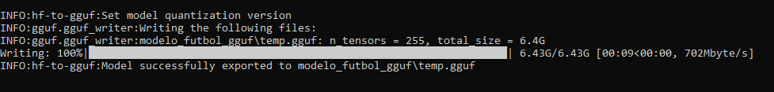

Captura 1 · LLM en Producción
Uso estable en entorno final

Cliente final
Flujo estable
Listo usuarios
LLM funcionando en entorno final: interfaz estable, prompts personalizados y respuestas coherentes. El modelo está completamente operativo sin entrenamiento adicional.